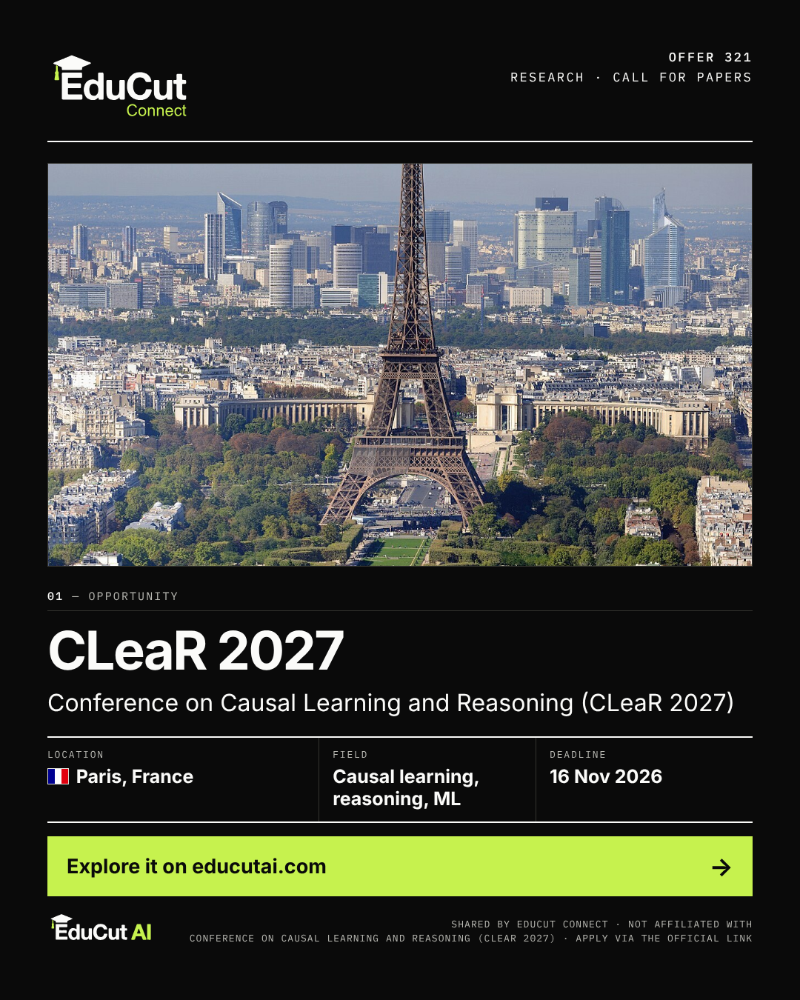

08:00
17 Nov 2026

Image file: 01_17Nov_08h00_Offer_321.png
🎓🇫🇷 Call for Papers at the Conference on Causal Learning and Reasoning, France! The Conference on Causal Learning and Reasoning (CLeaR 2027) is inviting paper submissions from researchers in causal learning, causal reasoning and machine learning. The conference takes place from 3 to 5 May 2027 at Sorbonne University in Paris. 📍 Location: Paris, France 🎓 Level: Researchers 🔬 Fields: Causal Learning and Reasoning, Machine Learning 📅 Deadline: 16 November 2026 🔗 Explore the opportunity and apply: https://educutai.com/educut-connect/321-clear-2027/ Know a researcher working on causal inference or machine learning? Share this opportunity! #CallForPapers #CLeaR2027 #CausalInference #MachineLearning #France #EduCutConnect #EduCutAI
Image alt text
Card for CLeaR 2027, the Conference on Causal Learning and Reasoning (CLeaR 2027), in Paris, France, with a paper submission deadline of 16 Nov 2026.